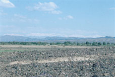
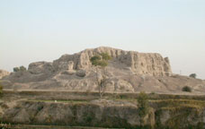
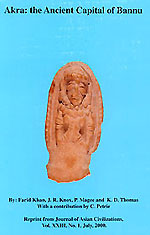

Department
of Oriental Antiquities > research
>
fieldwork > The
Bannu Archaeological Project
|

|
The BAP is a collaborative project between the Pakistan Heritage Society, University College London, Sydney University, and The British Museum. The Bannu Archaeological Project has been working in and around Bannu District, North-west Frontier Province, Pakistan since 1985, during which time a long list of Later Prehistoric and Early Historic sites have been discovered and recorded. Excavations at the Early Historic site of Akra began in 1995. The site covers some 80 hectares and is the largest archaeological site in the Bannu area. Material in the Department's collections suggests that the site was first occupied roughly 4000 years ago and continued to be occupied until the 11th century AD. In particular the Neolithic site of Sheri Khan Tarakai was the subject of focused excavations for a number of years, the results of which will be published in a monograph early next year. At present the project is focusing its research on the Chalcolithic site of Lewan and the Early Historic site of Akra. The results of the research so far at Akra have been recently published. |
|
 |
More detailed information about the project and its activities will be available through a suite of web pages in the near future. |
|
 |
Latest publications: This publication presents the results of excavations at the site between 1995 and 1998, and the analysis of collections held by the Department of Oriental Antiquities at The British Museum.
This publication by the Bannu Archaeological Project represents the results of three seasons of exploratory work in the Bannu basin, NWFP, Pakistan between 1985 and 1988. During this time the project identified a number of previously unknown later Prehistoric sites, one of which (Sheri Khan Tarakai) is now known to be the second oldest village farming settlement in south Asia. The publication not only provides detailed information about the archaeological sites and their material culture, but also information about the environment and physiography of the region. In addition to the descriptions there are also seventy-one figure drawings and twenty-one plates. |